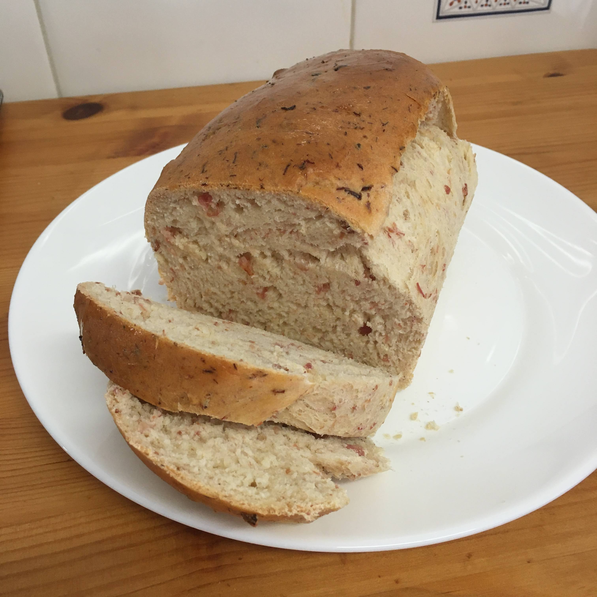

Pão de boteco

Ingredientes
- 150 g de bacon em cubos pequenos ou triturado (aproximadamente 1 xícara)
- 15 ml de azeite (1 colher de sopa)
- 1 ovo
- 260 ml de leite (1 xícara e 2 colheres de sobremesa)
- 40 ml de suco de limão (4 colheres de sobremesa)
- 6 g de sal (1 1/2 colher de café)
- 3 g de alho em pó (1 colher de café)
- 10 g de açúcar (1 colher de sopa)
- 5 g de fermento biológico seco (1 1/2 colher de café)
- Raspas de 1 limão (opcional)
- 600 g de farinha, aproximadamente (4 xícaras)
Modo de preparo
- Refogar o bacon na própria gordura, em fogo baixo, até dourar. Reservar;
- Em um bowl misturar bem o restante dos ingredientes, acrescentando a farinha aos poucos até dar o ponto (macia, mas sem grudar nas mãos). Passar para uma superfície enfarinhada e sovar;
- Incorporar o bacon à massa e deixar fermentar por 45 minutos, coberto com pano úmido;
- Modelar o pão e dispor em uma fôrma untada e deixar fermentar por mais 1h30 coberto com pano úmido;
- Assar em forno pré-aquecido a 180°C por 25-30 minutos. Retirar do forno e esperar 10 minutos antes de fatiar.